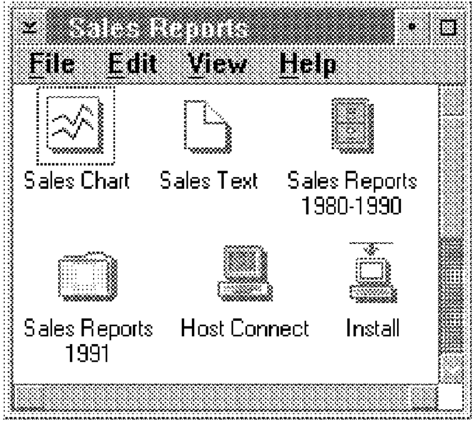
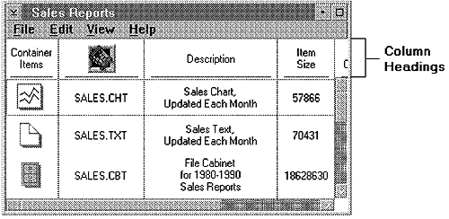
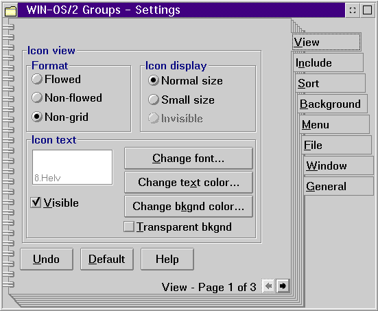
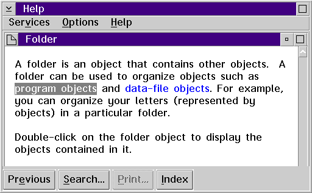

The user also can interact with an object by opening a window that displays more information about the object. The content of a window is a view of an object. A view is a way of looking at an object's information. Different views display information in different forms, just as information about an object is presented in the real world. An object can have more than one view.
The appearance of a window's contents and the kinds of interaction possible in a window are determined, in part, by the type of view presented in the window. CUA guidelines describe four basic types of views:
A Composed view of a data object arranges the object's data in an order that conveys the data's meaning. If the data is arranged differently in a Composed view, the object has a different meaning. For example, a graph or chart object typically is displayed in a Composed view because the arrangement of the components determines the meaning of the object as a whole. If the arrangement of the components changes, the meaning of the object changes.
A Contents view lists the components of an object. The components can be ordered or unordered in the view; the order of the information displayed in a Contents view does not affect the meaning of the object containing the information. CUA guidelines describe two kinds of Contents views:
An Icon view displays each object as an icon. Its purpose is to give the user an easy way to change the position of objects or to otherwise directly manipulate them. An object usually is represented by only one icon. However, for some tasks, the user might find it convenient to represent an object with more than one icon. For example, the user might want a representation of a printer object in more than one place so that the user can have easy access to the printer from anywhere. The user can create an additional icon, known as a shadow, to represent the same printer object. The following figure shows an Icon view:
A Details view combines small icons with text that provides additional information about objects. The type of information displayed depends on the type of object and the type of tasks the user wants to perform. A Details view gives the user access to some of the object's more frequently used information, without requiring the user to open the object. Small icons are included in a Details view to provide a way for the user to easily recognize objects and to directly manipulate each object. The following figure shows a Details view:
A Settings view displays information about the characteristics, attributes, or properties of an object, and provides a way for the user to change the settings of some characteristics or properties. A Settings view typically is provided for each type of object. The following figure shows a Settings view of an objects:
A Help view provides information that can assist the user in working with an object. The type of information displayed in a help view depends on the type of help the user requests. For example, the user can request help for an entire window or for part of a window. The following figure shows a help view assisting the user in working with an object: